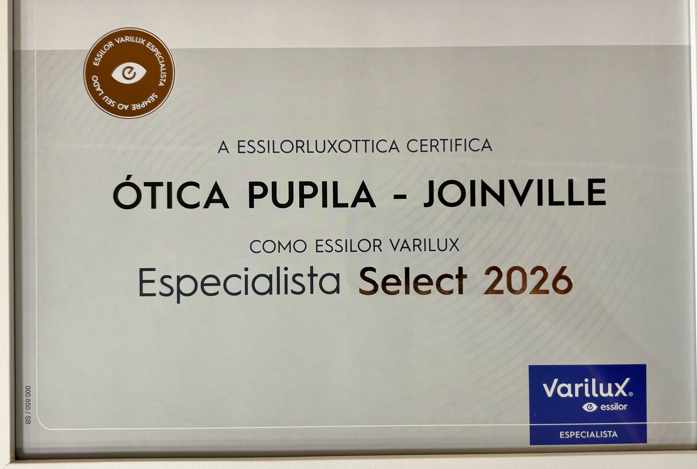

Visão em várias distâncias
Lentes multifocais progressivas para quem alterna entre perto, intermediário e longe.
LENTES PARA ÓCULOS · JOINVILLE
Trabalhamos com as principais tecnologias de HOYA, ZEISS e Essilor. Com sua prescrição em mãos, nossa equipe ajuda você a escolher as lentes mais adequadas à sua rotina. Produtos e prazos sob consulta.
Para comprar qualquer lente, é necessária uma receita médica. Isso vale para lentes de óculos e lentes de contato. Nossa equipe ajuda na escolha do produto conforme a prescrição; a loja não realiza consulta ou adaptação médica.
COMPRA COM RECEITA MÉDICA
A equipe da Pupila orienta a escolha das lentes para óculos com base na sua prescrição. Consultas, exames e adaptação médica não são realizados na loja.
Apresente a prescrição médica para as lentes que você procura.
Conte como usa seus óculos no trabalho, na leitura e no dia a dia.
Verificamos produtos, configurações e prazos para sua escolha.
UM RECONHECIMENTO DA ESSILORLUXOTTICA
A Ótica Pupila recebeu a certificação Essilor Varilux Especialista Select 2026. Conheça esse reconhecimento e as tecnologias Essilor com que trabalhamos.
Conheça a página Essilor
AS MARCAS COM QUE TRABALHAMOS
A Pupila é revendedora autorizada de HOYA, ZEISS e Essilor. Conheça as famílias de lentes e tecnologias de cada marca.
ESCOLHAS COM PROPÓSITO
A prescrição médica orienta a escolha. A equipe considera também como você usa seus óculos.
Lentes multifocais progressivas para quem alterna entre perto, intermediário e longe.
Soluções para leitura, computador e outras atividades de perto ou intermediárias.
Opções fotocromáticas, solares e tratamentos de superfície, conforme a lente escolhida.
Tecnologias específicas para crianças, avaliadas junto à indicação do oftalmologista.
ENTENDA SUAS LENTES
O tipo de lente e seus tratamentos cumprem funções diferentes. A escolha deve seguir sua receita médica e as necessidades da sua rotina.
Também chamada monofocal: a lente tem um campo de correção para uma distância principal, como longe ou perto, conforme a prescrição.
Reúne graus para longe, distância intermediária e perto, com transição gradual entre as zonas e sem linha aparente.
Tem duas zonas, geralmente para longe e perto, separadas por uma linha visível. Não possui uma zona intermediária dedicada como a progressiva.
É um tratamento que reduz reflexos nas superfícies da lente. Pode ser combinado com diferentes tipos de lente, conforme o produto.
Filtra parte da luz azul-violeta; o quanto varia conforme a tecnologia. Estudos não demonstraram redução consistente do cansaço por telas no curto prazo.
Reduzem o brilho refletido por superfícies como água e asfalto, especialmente em ambientes externos. A proteção UV deve ser conferida na lente escolhida.
PERTO · INTERMEDIÁRIO · LONGE
Nas multifocais progressivas, costuma-se olhar pela parte superior para longe, pela região central para distâncias intermediárias e pela inferior para perto. As laterais podem apresentar áreas de desfoque; o desenho varia de acordo com a lente, a receita e a montagem.
Arraste o controle para comparar as duas ilustrações.
Comparação conceitual: a largura dos campos pode variar entre desenhos de lentes. A imagem não representa a visão real nem o desempenho de uma lente ou marca específica.
VAMOS ENCONTRAR O SEU PRÓXIMO OLHAR?
De perto, cada detalhe faz a diferença. Venha para a Pupila.